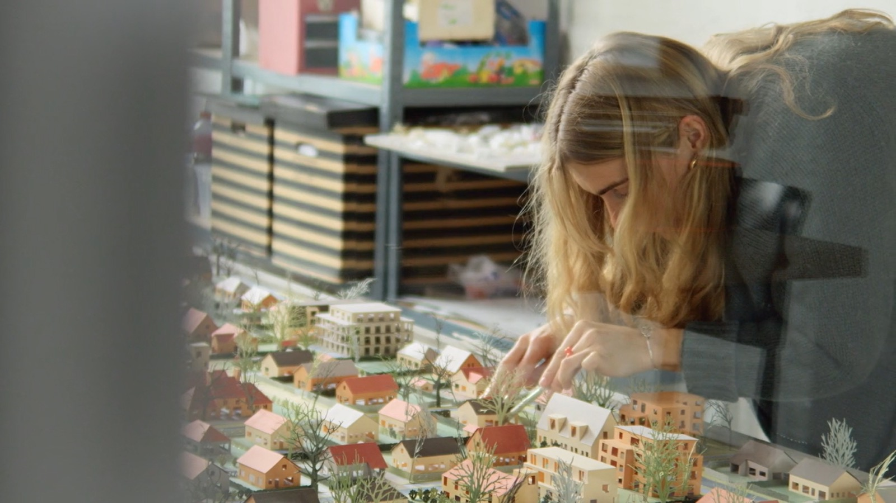

Heilige Huisjes? Verkavelingswijken in transformatie

Vlaanderen is een land van verkavelingen. Vrijstaande woningen met een eigen tuin, brede straten en veel groen belichamen al decennialang de Vlaamse woondroom. Maar deze woonvorm neemt ook bijzonder veel ruimte in beslag. Terwijl de behoefte aan bijkomende woningen blijft groeien, wil Vlaanderen het aansnijden van open ruimte steeds verder beperken. Kunnen bestaande verkavelingswijken een deel van de oplossing bieden? En hoe kunnen ze veranderen zonder de kwaliteiten te verliezen die bewoners er zo waarderen?
Heilige Huisjes? Verkavelingswijken in transformatie volgt een onderzoekstraject van Team Vlaams Bouwmeester en het Departement Omgeving, waarin ontwerpteams de mogelijkheden voor verdichting in drie Vlaamse wijken onderzoeken. In Wondelgem, aan de rand van Gent, botsen ambitieuze plannen op de financiële realiteit van hoge grondprijzen. In de Roeselaarse wijk Groenpark blijkt dat bewoners wel openstaan voor kleinschalige verbeteringen, maar veel minder voor ingrijpende veranderingen. En in de Ravensteinwijk in Tervuren biedt het grote aandeel sociale woningen juist kansen om de wijk grondig te vernieuwen.
De documentaire laat zien waarom de transformatie van verkavelingswijken zo moeilijk van de grond komt. Verouderde stedenbouwkundige voorschriften, versnipperd eigendom en uiteenlopende belangen staan verandering vaak in de weg. Tegelijk tonen inspirerende woonprojecten in België en Zwitserland dat het anders kan. Door woningen slimmer te groeperen, ruimte te delen en meer plaats te maken voor groen, kunnen bestaande wijken uitgroeien tot duurzamere en meer diverse woonomgevingen. Maar daarvoor zijn niet alleen goede ontwerpen nodig. Ook samenwerking, politieke keuzes en de bereidheid om vertrouwde woonmodellen ter discussie te stellen, zijn onmisbaar.
- Concept, regie en eindredactie
- Bertrand Lafontaine
- Camera, klank en montage
- Tim Buhck (Always Hungry Productions)
- Kleurcorrectie
- Denise Elbel (Always Hungry Productions)
- Première Provinciehuis Gent, studiedag Departement Omgeving en Team Vlaams Bouwmeester · 17.11.2025
- AFFR Rotterdam, Atlas of Possibilities · 08.10.2026